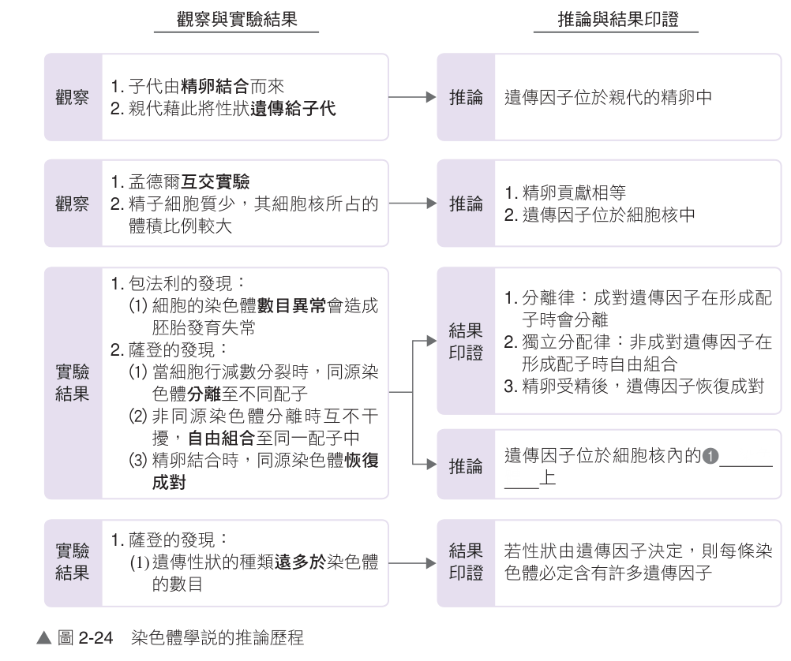

高中生物（全） 2-2 遺傳物質
學說推論
2-2.1 遺傳的染色體學說推論歷程（第 1/19 頁）
💡 單元引言：
孟德爾透過豌豆雜交實驗推論生物性狀是由「遺傳因子」所控制。然而，遺傳因子究竟位在細胞的哪裡？又是如何發揮作用的？20 世紀初，科學家發現遺傳因子位於染色體上，而染色體是由 DNA 和蛋白質共同構成。那麼，真正承載生命遺傳密碼的物質，究竟是結構複雜的蛋白質，還是去氧核糖核酸（DNA）呢？
一、學說的推論與重要性
📌 (一) 遺傳的染色體學說推論歷程
• 提出者：1902～1903 年，由美國科學家薩登（Sutton）與德國科學家包法利（Boveri）各自獨立提出。
• 歷史背景補充：德國生物學家佛萊明（Flemming）利用苯胺染料將動物胚胎細胞染色，觀察到細胞分裂時有絲狀物質會倍增並分配至子細胞，此絲狀構造即為我們今日所稱的「染色體」。
• 歷史背景補充：德國生物學家佛萊明（Flemming）利用苯胺染料將動物胚胎細胞染色，觀察到細胞分裂時有絲狀物質會倍增並分配至子細胞，此絲狀構造即為我們今日所稱的「染色體」。

▲ 圖 2-24 染色體學說的推論與結果印證歷程（🔍 點擊可放大檢視）
🔍 染色體學說四大邏輯推論：
1. 子代由精卵結合而來：親代透過配子遺傳性狀 → 推論遺傳因子存在於親代的精卵中。
2. 精卵對子代貢獻相等：精子幾乎僅含細胞核（細胞質極少） → 推論遺傳因子必位於細胞核內。
3. 減數分裂染色體動態平行對應孟德爾法則：減數分裂同源染色體分離印證「分離律」；非同源染色體自由組合印證「獨立分配律」；受精後恢復成對 → 總結推論遺傳因子位於細胞核內的「染色體」上。
4. 性狀數量遠大於染色體條數：生物性狀成千上萬，染色體卻僅有數對 → 推論每條染色體必定帶有許多遺傳因子（基因）。
1. 子代由精卵結合而來：親代透過配子遺傳性狀 → 推論遺傳因子存在於親代的精卵中。
2. 精卵對子代貢獻相等：精子幾乎僅含細胞核（細胞質極少） → 推論遺傳因子必位於細胞核內。
3. 減數分裂染色體動態平行對應孟德爾法則：減數分裂同源染色體分離印證「分離律」；非同源染色體自由組合印證「獨立分配律」；受精後恢復成對 → 總結推論遺傳因子位於細胞核內的「染色體」上。
4. 性狀數量遠大於染色體條數：生物性狀成千上萬，染色體卻僅有數對 → 推論每條染色體必定帶有許多遺傳因子（基因）。